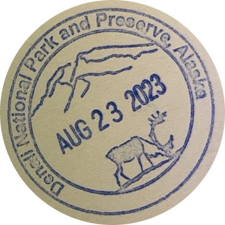
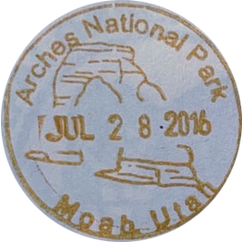
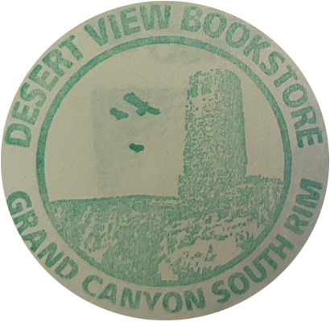
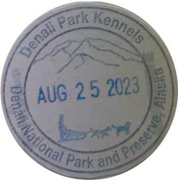
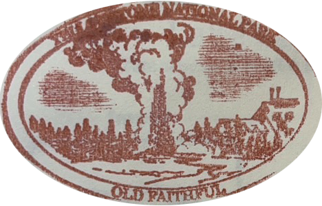
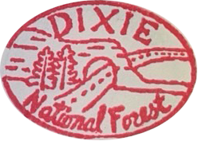

Click on the stamps inside
to learn more!

I visited Arches during the summer of 2016! It was a short hike Delicate Arch, which is the famed natural feature pictured in the background of the stamp. Some cool animals I spotted include mule deer, coyotes, desert cottontails, and jackrabbits!

I visited Grand Canyon during the summer of 2016, and have visited this park about three times in total. I went camping here for the first time with my family, and got to see many viewpoints as well as animals.

Denali National Park, which features the tallest mountain in North America Mount Denali, was the most recent National Park I visited this past summer. It is located in Alaska, and I got to see many cool animals such as caribou, brown bears, and moose.

I visited Yellowstone National Park during the summer of 2017. The most memorable features here were the geysers, such as Old Faithful pictured in the stamp. I was able to see many animals such as elk, moose, bears, mountain goats and of course, bison!

I passed through Dixie National Forest during the summer of 2014, between the drive from Bryce Canyon National Park and Zion National Park. I went again in the summer of 2016, on the way to Arches and Grand Canyon National Park. This was one of the first memorable hikes I remember because of the red rock canyons.